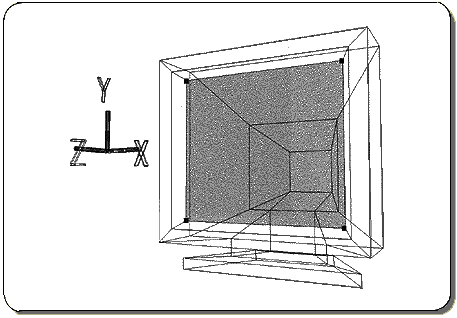
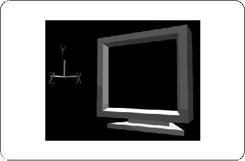
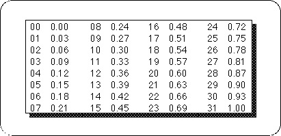

Return to previous page | Return to menu | Go to next page
Set the point in the figure below to TAG and highlight the polygon (Figure 4-7).

And again,
[Polygon] → [Assign New Material]
please choose.
The settings here are as follows.
1) Set “Phong” to “Lambert”.
2) Enter R: 0.06, G: 0.06, B: 0.06.
3) Set “Diffuse” and “Ambient” to the same value.
4) The name is "SNN" and OK.
Click “Accept” when you are done.
Next, turn off the highlight and remove all TAGs.

Finally [Save] → [Selected Models] Please save with.
This completes the practice of coloring TV monitors.
When setting the color of the polygon with Saturn, it is necessary to color each 32 RGB colors as shown in the table below.
